B 树数据结构
原文：https://www.studytonight.com/advanced-data-structures/b-trees-mway-trees-data-structure
B 树是一种特殊类型的 M 路搜索树。
双向树
在学习 B-Trees 之前，我们需要知道什么是 M-way 树，以及 B-tree 是一种特殊类型的 M-way 树。多路(多路)树是具有以下属性的树:
树中每个节点最多可以有 m 个子节点。
树中的节点最多有 (m-1) 个关键字段和指向子节点的指针(引用)。
考虑下图所示的 M 路树的图示。
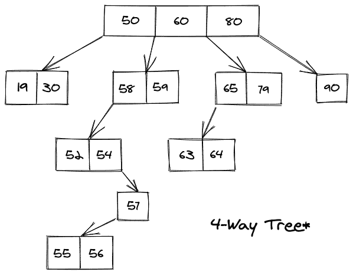
上图为 4 向树，每个节点最多可以有 3(4-1)个关键字段和最多 4 个子节点。也是 4 向搜索树。
双向搜索树
M 路搜索树是一种更受约束的 M 路树，这些约束主要应用于关键字段及其值。使其成为多路搜索树的多路树的约束条件是:
树中的每个节点可以与 m 子节点和 m-1 关键字段相关联。
树的任何节点中的键都是按排序顺序排列的(升序)。
第一个 K 子节点中的键是小于这个节点的**Kth**键。
最后一个 (m-K )孩子的按键高于第 K 个按键。
考虑下面显示的 M 路搜索树的图示:
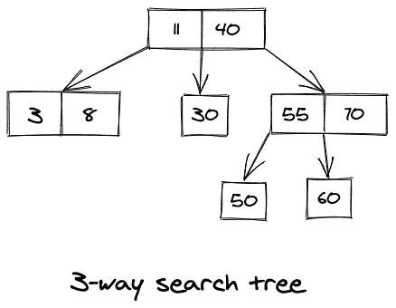
M-way 搜索树与 M-way 树具有相同的优势，这使得搜索和更新操作更加高效。尽管如此，它们可能会变得不平衡，这反过来又让我们面临同样的问题，即在一棵倾斜的树上寻找一把钥匙，这并不是一个很大的优势。
在双向搜索树中搜索:
如果我们想要在 M 路搜索树中搜索一个值，比如说 X ，并且当前我们处于包含来自 Y1、Y2、Y3，.....，Yk 。那么总共有 4 种情况可以处理这种情况，它们是:
如果 X < Y1 ，那么我们需要递归遍历 Y1 的左子树。
如果 X > Yk ，那么我们需要递归遍历 Yk 的右子树。
如果 X = Yi ，对于一些 i ，那么我们就完了，可以回归了。
最后也是唯一剩下的情况是，当对于某些 i 我们有 Yi < X < Y(i+1) 时，那么在这种情况下我们需要递归地遍历存在于 Yi 和 Y(i+1) 之间的子树。
例如，考虑上面显示的 3 向搜索树，比如说，我们想要搜索一个关键字(X)等于 60 的节点。然后，考虑到上述情况，对于根节点，第二个条件适用， (60 > 40) ，因此我们向下移动到 40 的右子树。现在，最后一个条件仅有效，因此我们遍历位于 55 和 70 之间的子树。最后，在向下遍历时，我们有了我们一直在寻找的价值。
二叉树数据结构:
B 树是 M 路搜索树的扩展。除了具有 M 路搜索树的所有属性之外，它还具有自己的一些属性，这些属性主要是:
B 树中的所有叶节点都在同一级别。
所有内部节点必须有 M/2 子节点。
如果根节点是非叶节点，则它必须至少有两个子节点。
除根节点外，所有节点必须至少有【M/2】-1键，最多有 M-1 键。
考虑如下所示的 B 树的图示:
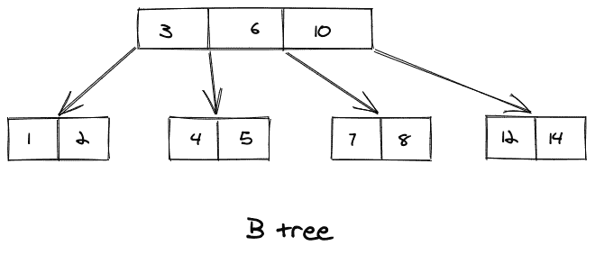
在 B 树中搜索:
在 B 树中搜索关键字就像在 M 路搜索树中搜索一样，我们刚刚在上面看到过。考虑下图所示的 B 树的图示，假设我们想在下图所示的 B 树中搜索一个键 49。我们按照以下方式进行:
将项目 49 与根节点 75 进行比较。自 49 < 75 遂，移至其左子树。
此后， 40 < 49 < 58 ，遍历右子树 40。
49 > 44 ，向右移动。对比 49 。
我们找到了 49 个，所以回来了。
考虑如下所示的图示:
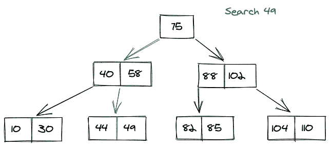
在 B 树中插入:
在 B 树中插入是在叶节点级别完成的。我们按照给定的步骤来确保插入后 B 树是有效的，这些步骤是:
首先，我们遍历 B 树，找到要插入的键适合的节点。
如果该节点包含少于 M-1 个键，那么我们以递增的顺序插入该键。
如果那个节点恰好包含 M-1 键，那么我们有两种情况？按照递增的顺序插入新元素，通过中值将节点拆分为两个节点，将中值元素向上推至其父节点，最后如果父节点还包含 M-1 键，那么我们需要重复这些步骤。
考虑如下所示的图示:
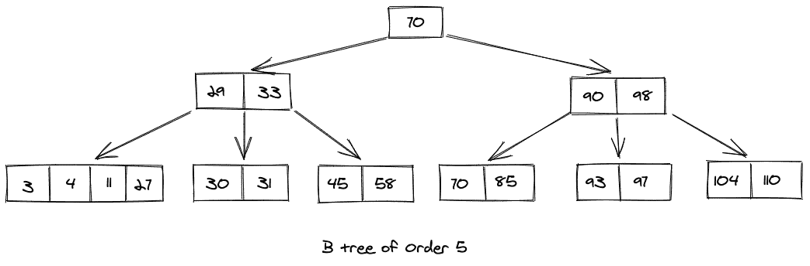
现在，考虑我们要在上面显示的 B 树中插入一个键 9，插入键 9 后的树看起来像这样:
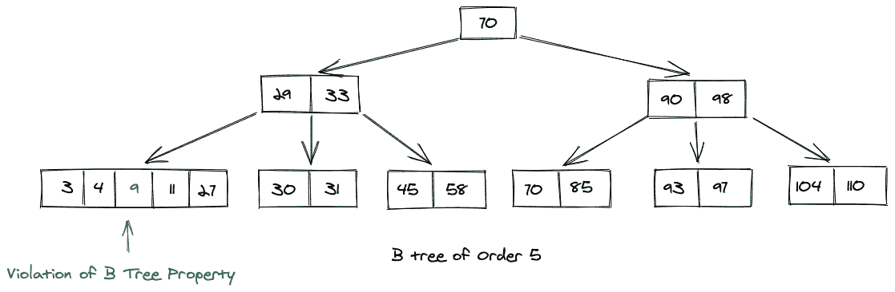
由于发生了违规，我们需要将中间节点推送到父节点，然后将节点分成两部分，因此 B 树的最终外观是:
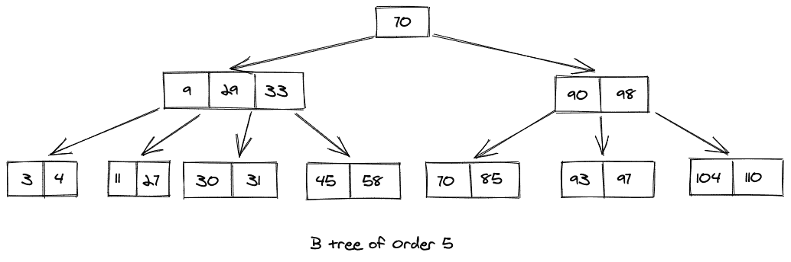
在 B 树中删除:
删除 B 树中的一个键包括两种情况，它们是:
从叶节点删除密钥
从内部节点删除密钥
从叶节点删除密钥:
如果我们想要删除存在于 B 树的叶节点中的键，那么我们有两种可能的情况，它们是:
- 如果包含我们想要删除的键的节点反过来包含的键数超过了有效 B 树所需的最小键数，那么我们可以简单地删除该键。
考虑如下所示的图示:
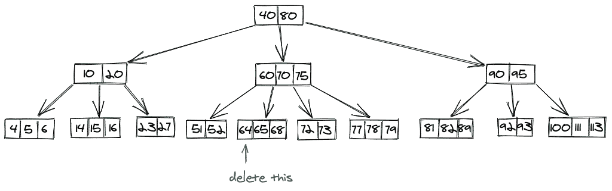
比方说，我们想要删除键 64，并且其中存在 64 的节点的节点数超过了 B 树所需的最小节点数，即 2。所以，我们可以简单地删除这个节点。
删除 64 后的最终树如下所示:
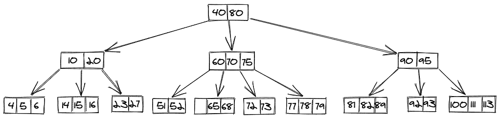
如果包含我们想要删除的键的节点反过来包含有效 B 树所需的最小键数，那么有三种情况是可能的:
为了从 B 树中删除这个键，我们可以从紧邻的左节点(左兄弟)借用一个键。这个过程是我们将最高值的键从左边的兄弟移动到父节点，然后将最高值的父键移动到我们刚刚删除键的节点。
在另一种情况下，我们可能不得不从紧邻的右节点(右兄弟)借用一个键。这个过程是我们将最低值的键从右边的兄弟节点移动到父节点，然后将最高值的父键移动到我们刚刚删除键的节点。
最后一种情况是，左兄弟或右兄弟都不处于给当前节点任何值的状态，因此在这一步中，我们将与他们中的任何一个进行合并，并且合并还将包括来自父节点的键，然后我们可以从节点中删除该键。
案例 1 绘画作品:
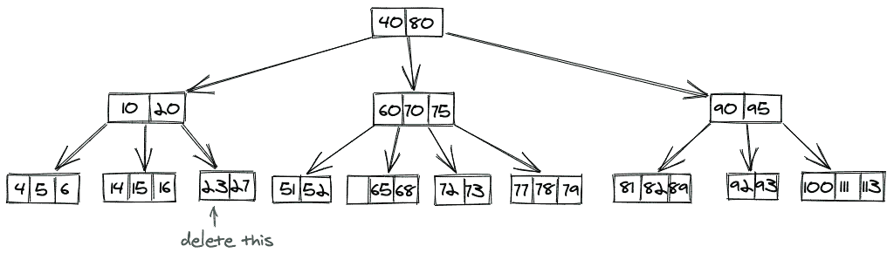
在我们删除 23 之后，我们询问左边的兄弟，然后将 16 移动到父节点，然后向下推 20，得到的 B 树是:
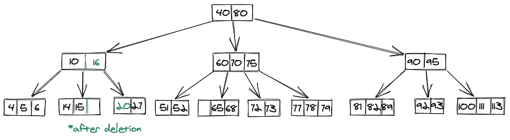
案例 2 绘画作品:
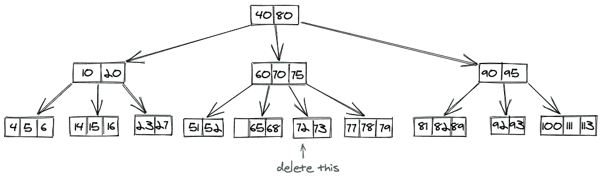
在我们删除 72 之后，我们询问右边的兄弟，然后将 77 移动到父节点，然后将 75 向下推，得到的 B 树是:
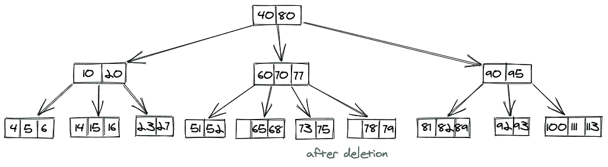
案例 3 绘画作品:
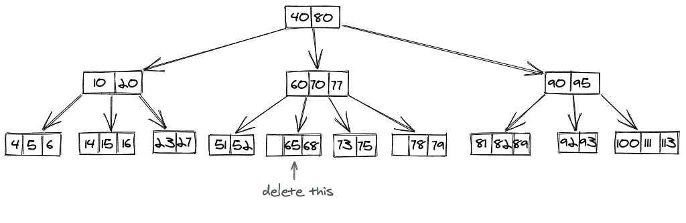
从叶节点中删除 65 后，我们将得到最终的 B 树，如下所示:
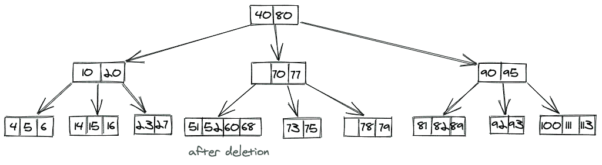
从内部节点删除密钥:
如果我们想删除一个存在于内部节点中的键，那么我们可以取这个键的顺序前置的值，或者如果取那个顺序前置违反了 B 树属性，我们可以取这个键的顺序后续。
在有序前身方法中，我们在存在我们的键的节点的左子节点中提取最高值。
在有序后继方法中，我们提取密钥所在节点的右子节点中的最低值。
上述情况的图示:
- 内部前身进场 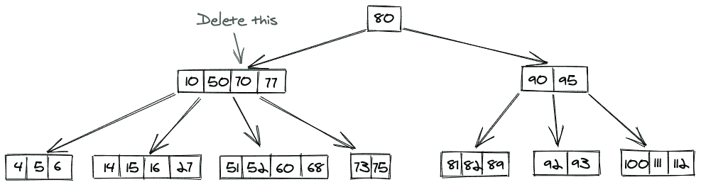 删除后，我们的 B 树: 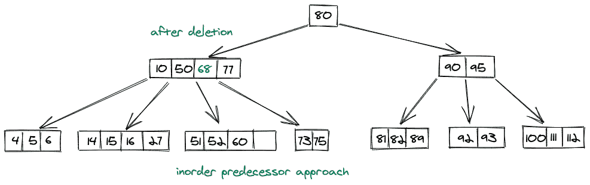
- 内部继任者进场 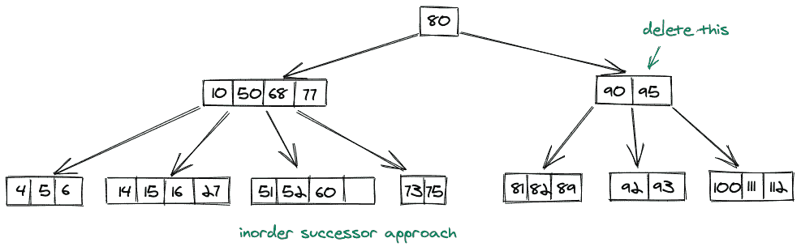 删除 95 后，我们的树会是这样的: 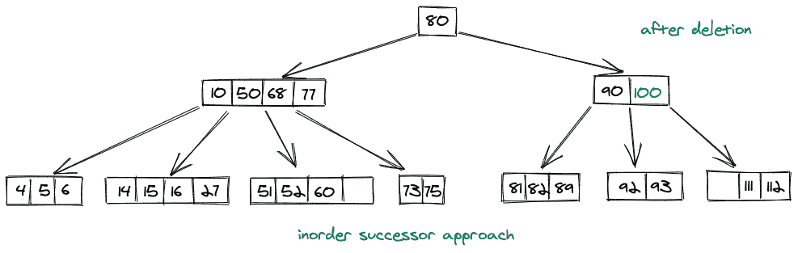
要点:
B 树中搜索、插入和删除操作的时间复杂度为 O(log n)。
B 树中的最小键数应该是[]T2【M/2]-1。
B 树中最大键数应为 M-1。
B 树中的所有叶节点应该在同一级别。
二叉树中节点的所有键都是按升序排列的。
在 SQL 中使用 b 树来提高查询效率。
B 树中的每个节点最多只能有 M 个子节点。
结论:
在本文中，我们了解了什么是 M 路树，M 路树和 M 路搜索树有什么区别。此外，我们还学习了应用于 M 路树的约束，以使其成为 B 树。然后我们学习了搜索、插入和删除操作。